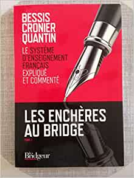

Les enchères au bridge : Tome 1, le Système d'Enseignement Français expliqué et commenté
de Michel Bessis (Avec la contribution de), Philippe Cronier (Avec la contribution de), Jean-Christophe Quantin (Avec la contribution de)

Comment approfondir la compréhension du SEF ? Les enchères au bridge tome 3 est le dernier tome du travail
accompli par trois des meilleurs spécialistes de la discipline pour vous offrir les réponses aux questions
que vous vous posez, développer vraiment en profondeur toutes les situations d'enchères et vous proposer des
pistes de progression. Après un premier tome consacré aux enchères à deux, un second, sous-titré les enchères
à quatre et dédié aux enchères du camp qui n'a pas ouvert, ce troisième et dernier tome aborde les enchères
compétitives du point de vue du camp de l'ouvreur. L'ensemble forme décidément un incontournable de la bibliothèque
de l'honnête bridgeur français du début du XXIe siècle. Plongez-vous sans modération dans les délices des enchères
compétitives. C'est tout votre plaisir des enchères au bridge qui s'en trouvera renouvelé.